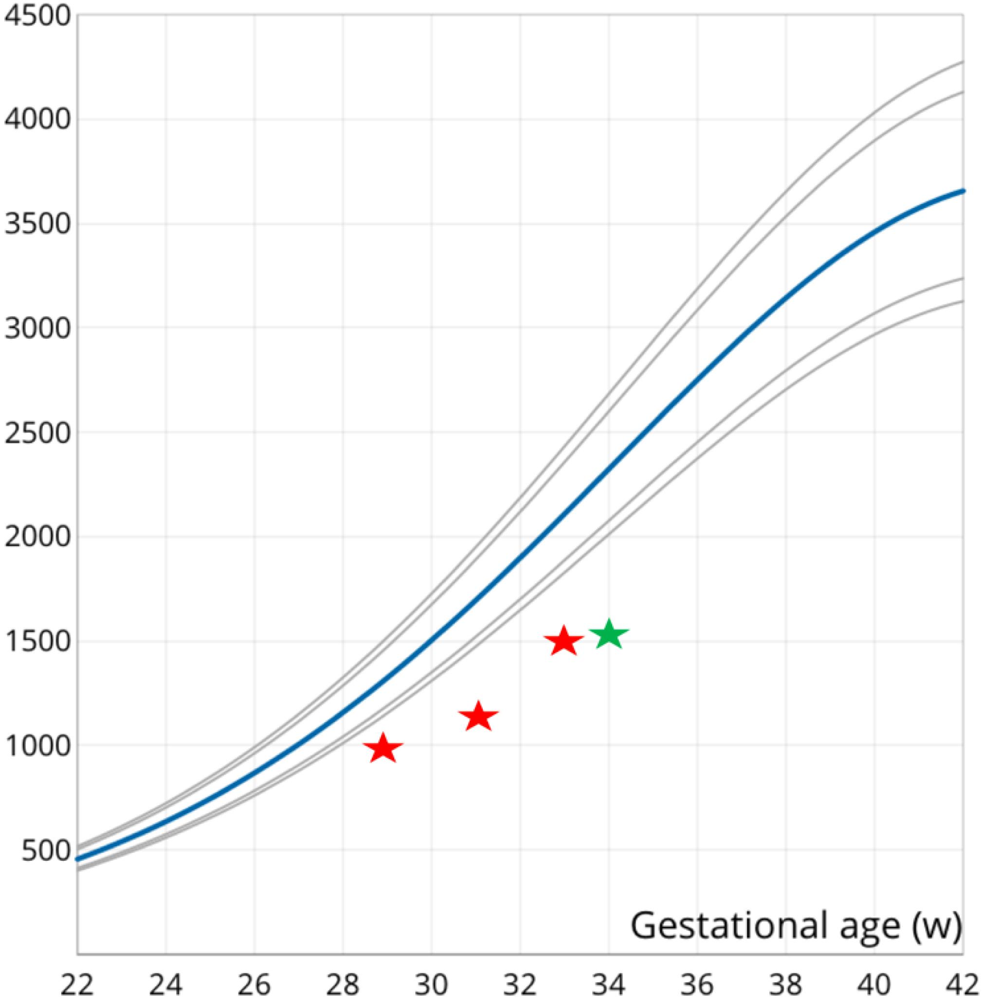

O fundo pequeno: a porta de entrada e seus 4 diferenciais
O erro de fechar cedoOs 4 diferenciaisPIG constitucionalIdade × hipertensãoRefazer a conta
“Fundo menor que o esperado? Já escrevo restrição de crescimento e sigo.”O fundo pequeno é a porta de entrada do raciocínio — o achado que dispara a investigação, com quatro diferenciais obrigatórios. Fechar num deles sem excluir os outros três é o caminho da questão errada.
O erro de fechar cedo
O erro de fechar cedo. Muita gente, diante de um fundo menor que o esperado, já escreve “restrição de crescimento” e segue. É aí que se erra. O fundo menor que o esperado é a porta de entrada do raciocínio — o achado que dispara a investigação, não que a encerra.
Leque do fundo pequeno — 1 achado, 4 diferenciais
Interativo: clique em cada ramo para ver o que investigar.
O fundo pequeno é porta de entrada: abre em restrição, oligodrâmnio, PIG constitucional e erro de idade gestacional. Fechar num ramo sem excluir os outros três é o erro; o de idade gestacional é o mais barato de excluir.
Os quatro diferenciais obrigatórios
Os quatro diferenciais obrigatórios. Um fundo abaixo do esperado abre quatro diagnósticos diferenciais obrigatórios: (1) restrição de crescimento (RCIU); (2) oligodrâmnio; (3) pequeno para a idade gestacional (PIG) constitucional; e (4) erro no cálculo da idade gestacional. Fechar em um deles sem excluir os outros três é o caminho da questão errada.

Curva de crescimento fetal com queda abaixo dos percentis
Estimativas seriadas (estrelas vermelhas, semanas 29, 31 e 33) plotadas abaixo da faixa esperada: o feto não só é pequeno numa medida isolada, mas segue uma trajetória persistentemente baixa. É a curva — não o valor único — que interessa.
García-Verdevio ME et al. Rev Chil Obstet Ginecol 2018 (SciELO) · fonte / licença: CC BY
O PIG constitucional — pequeno sem doença
O PIG constitucional — pequeno sem doença. O PIG constitucional é o feto pequeno “só por ser pequeno”: um pequeno sem doença por trás. Ele não tem insuficiência placentária, não tem sofrimento — é a variação normal de tamanho de quem simplesmente é menor. Distinguir esse feto do que restringe por doença é o que separa antecipar um parto de não tocar em nada.
A idade não basta, a hipertensão classifica
A idade não basta, a hipertensão classifica. Volte à Terezinha para fixar a pegadinha: 40 anos, isoladamente, não classificam alto risco — a idade aumenta o risco de algumas complicações, mas não é suficiente. Quem a coloca como alto risco é a hipertensão arterial crônica. Banca adora oferecer a idade como “resposta fácil” — não caia.
Refazer a conta antes de tudo
Refazer a conta antes de tudo. Antes de qualquer conclusão, refaça a idade gestacional. Um cálculo errado arrastado desde a caderneta pode, sozinho, explicar a discrepância: o fundo pode estar adequado para a idade real, e não havia restrição nenhuma. É o diferencial mais barato de excluir — e o mais esquecido.
Quiz — fixação
Fundo uterino menor que o esperado. Qual conjunto representa os diferenciais obrigatórios?
Gabarito B.São quatro, e todos obrigatórios antes de fechar qualquer um.
Aparar em dois deixa passar o PIG constitucional (que muda a conduta para “não antecipar”) e o erro de idade gestacional (que pode dissolver o caso inteiro).
Cmacrossomia e polidrâmnio dão fundo aumentado, não diminuído — inverte a direção do achado.
DDPP e trabalho de parto prematuro não se manifestam por fundo pequeno; é confundir “achado de alto risco” com “causa de fundo baixo”.
Gestante de 40 anos, hipertensa crônica, com fundo pequeno. Sobre a classificação de risco, é correto afirmar:
Gabarito A.A doença materna (HAS crônica) é o classificador; a idade avançada soma, mas não define.
Bé a pegadinha clássica — oferecer a idade como classificador.
Ca hipertensão claramente classifica (exige USG seriada, entre outros).
Dfundo pequeno é achado que investiga, não critério de classificação de risco pré-natal.
Instalar GO — acesso offline, ícone na tela inicial.